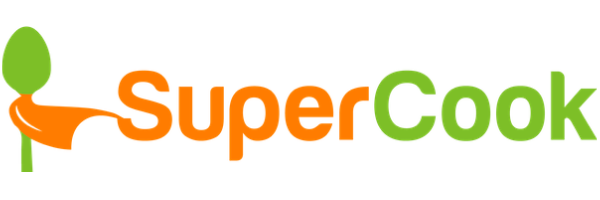
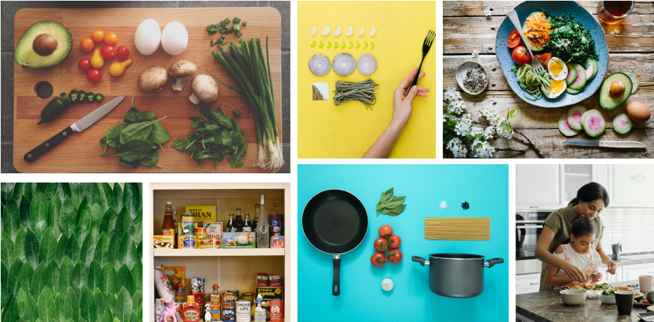
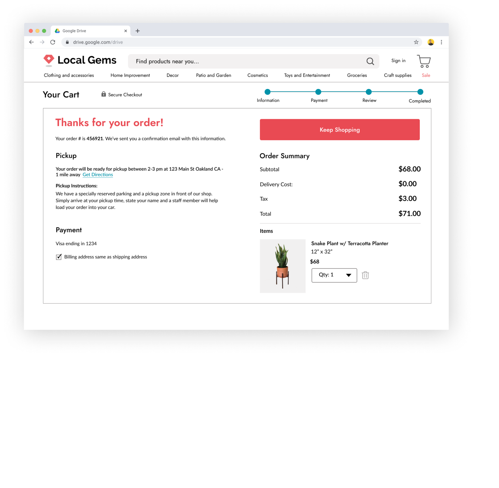

Pantrybuddy helps you find easy-to make recipes based on your preferences and ingredients you have in your kitchen.
Overview
Role
UX Research, UX Design,
Information architecture,
Visual design and testing
Deliverables
High fidelity Invision prototype,
competitive analysis, user
personas, user stories, user flows, logo, brand style guide, UI design
Tools used
Figma, Invision,
Google Forms, Illustrator,
Whimsical, Lookback.io, UsabilityHub
Problem
User testing on the original Pantry buddy app showed that users were having a hard time using it to find recipes. The main roadblocks they were running into were:
- Being slowed down by a sign-up process that was introduced too early during onboarding
- Not able to input ingredients or get recipes

Solution
I worked with developer Ben Sumser to redesign the existing app and make it into a progressive web app with a:
- Smoother onboarding process customized to user preferences
- Total re-brand with a consistent look and feel
- Easy navigation that allows users to input ingredients from their kitchen and get recipes

Research and Discovery
User Research
- I started with an audit of the existing web app, where I found that no users were able to use the app successfully to find recipes.
- I presented these findings to the developer and collaborated with him to build out a more compreshensive app to address those roadblock in the existing app.
- Did follow-up interviews where I asked users to record themselves standing in their kitchens deciding what to cook with their ingredients.
- Conducted a survey to discover user habits, pain points and needs when it comes to cooking at home.
66%
struggle with deciding what to make with ingredients in their kitchen
50%
users google search recipes based on a key ingredient
52%
of users plan meals at the last minute and want quick recipes
67%
use a Mobile phone to search for recipes
Pain Points:
What’s your biggest frustration when deciding what to cook?
87% Finding recipes that fit my preferences
54% Planning meals ahead of time
Features:
What features do you need in a recipe app?
- Recommendations based on preferences
- Getting recipes from ingredients I have
- Nutritional information
- Rating and reviews
- Ability to favorite recipes
- Grocery list
Ingredients:
What are some of the most common ingredients you have in your kitchen?
Broccoli
Onion
Noodles
Chicken
Cheese
Eggs
User Survey Analysis
Based on the findings I realized I needed to create a recipe app that would:
- Show recipe recommendations based on their dietary preferences
- Show recipe recommendations based on ingredients in their kitchen
- App needs to highlight most common ingredients so users can input them faster
- Need to highlight popular recipe categories like quick and easy, vegetarian, low carb ect
- Need to include favoriting a recipe feature
- Prioritize mobile experience because users will be standing in front of their fridge holding their phones while logging ingredients
Competitive Analysis
To find an opportunity for a recipe app to compete in the marketplace, I conducted a competitive analysis on three competitors: I chose some because our users use them to find recipes and other because they’re direct competitors:

Strengths
- Detailed recipe filtering
- Add ingredients by voice
- Shows basic 3rd party recipe information in a clear way
Weaknesses:
- Content gets stale, doesn’t refresh
- Information about the “local maker” is hard to find.
- Limited list of ingredients and therefore recipes
- Links out to 3rd party recipes which disrupts the experience
Strengths:
- High quality pictures, content and compelling videos.
- Clear, consistent layout of recipes
- Easy-to use ingredient finder
Weaknesses:
- Ingredient finder only allows you to input 3 ingredients and it doesn’t always work well
- It links out to 3rd party sites which disrupts the purchasing experience.
Strengths:
- Consistent format for each recipe
- Social proof from users uploading recipe photos to the site
- Customized recipe preferences
Weaknesses:
- No feature that allows you to input your ingredients and get recipes
- Varying quality of recipes and photos don’t look appetizing
Findings
These apps have their strengths but none have the combination of being able to add ingredients from your kitchen and showing you recipes based on your personal preferences. I found an opportunity to differentiate an app that:
- Lets you indicate dietary preferences AND add ingredients to get recipes
- Serves up fresh recipe inspiration with new and rotating content
- Improves the experience of reading 3rd party recipes with a consistent page format
User Personas
As trends in my research emerged, I conducted follow-up interviews with respondents to better understand their survey responses and learn more about how they decided what to cook at home.

Daniel
Goals:
Wants to reduce waste and save trips to grocery store.
Wants recipes based on dietary preferences.
Frustrations:
"I have a hard time thinking of what to make with the ingredients I have when I'm planning last minute. Seems like a lot goes to waste"
Alexa
Goals:
Wants quick, easy and generally healthy recipes
Frustrations:
“I spend too much time googling recipes that fit my preferences”

Erin
Goals:
Wants to eat more veggies and discover new recipes
Frustrations:
“I bookmark my favorite recipes in my browser but it's hard to keep track of them”
Information Architecture
Site Map
To translate the user flows into screens I created a site map to determine the structure of the app.

User Flows
Next, I created user flows to map out our highest priority user stories. The audit of the original app revealed that users were getting stuck with the signup process and not finding recipes. Research also showed that our users typically google recipes without signing up for a specific recipe app, so we decided to provide compelling recipe recommendations without requiring signup. Other features like adding a recipe to favorites or adding ingredients to a shopping list would require creating an account and provide a positive incentive for users to create a profile. Since it’s common for a user to skip through an onboarding process we decided that we’d still allow them to search for recipes but not show them any recipes until they added ingredients from their kitchen and encourage them to do so.


Sketching and wireframing
I sketched out wireframes for each screen needed to complete the tasks in the user stories and flows.
Low fidelity landing page desktop wireframes
Low
Early User testing
I did some quick user testing with the wireframes to see if my onboarding process was working and I got these results and made these changes:
- Changed the navigational structure
Before


Visual Design
Branding exploration and discovery
To kick start this process, I created a moodboard of…….to help us mind-map and list-make the brand characteristics I wanted our platform to convey. I used this list of characteristics and sketched dozens of logo concepts. I narrowed it down to three of the strongest ones and ran a preference test, and the design with… emerged as the clear winner.

Logo Development
I decided on the name Local Gems and created dozens of sketches to convey this concept
Preference Testing
Using the ideas generated from mind-mapping, I created dozens of sketches that would evoke the function of Pantrybuddy, focusing on creating a stylized wordmark. I ran a preference test between three options and the wordmark with the fork and spoon incorporated emerged as the clear winner.

The Final Logo
The logo mark itself reflects the concept of... It represents how. I choose a (color) from the mood board for the mark. I used the font Jost for the wordmark because it’s friendly, modern and easily incorporates a fork and spoon into it.

Style guide and brand assets
I used the typeface Raleway for headers, and paired it with the font Lato for body copy. I built our color palette around the green of the logo mark, with primary colors like blues that are associated with trust and have a calming effect on home cooks who are in a hurry../... I created a style guide that would instruct how to use assets like the logo, colors and typefaces in the app design.


Preference Testing
Using the new branding I conducted a preference test for the landing page, and this version won out. I wanted to make sure I got the brand positioning right on the home page so I ran a preference test between two options:
25% preferred this design
75% preferred this design
Prototyping and Testing
User testing high fidelity prototypes
I created high fidelity prototypes based on our wireframes and brand guidelines and tested the mobile version remotely on 3 users, asking them to stand in their kitchens while testing it and to complete these tasks:
- Browse for and filter different categories of products
- SIndicate their dietary preferences
- Log ingredients from their kitchen
- Filter through recipe category and find a recipe
Users were able to indicate preferences and log ingredients, but one user chose to skip through the onboarding experience entirely and was met with the notification on the home page to add ingredients, and no recipes, which was a negative experience, so I choose to include some recipe categories by default to give users some value even if they didn’t complete the onboarding process. Based on this round of testing I made the following changes:
- Show recipes to users who skip the onboarding proces
- Make recipe categories like “quick and easy more prominent
Before

After

Before

After

Testing the desktop prototype
I applied the lessons learned by testing the mobile version and included the same content an experience with the responsive version, but I used a different layout for the navigation and included additional content like breadcrumbs. I conducted further testing on the desktop prototype with users and made these changes:
Before

After
Final Prototype
After much testing and iteration I finalized my desktop and mobile prototypes. This easy to use web app lets users shop local online and:
Onboarding indicate preferences, log ingredients
- Lots of options
- Option to skip onboarding

Mobile and responsive homepage
✓ Shows recipes based on ingredients and preferences
✓ Nav, progressive web app
✓ Still shows you recipe

Mobile and responsive recipe page
Same format for each recipe
Shows what ingredients you have and odn’t have

Conclusion
This is what I learned:
-This is what I learned:
-Provide value to users even if they skip onboarding, don’t penalize them for not using your app as intended.
-
Development
Conclusion
Developer handoff:
-This app is under development
-Provide value to users even if they skip onboarding, don’t penalize them for not using your app as intended.
-